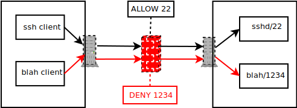
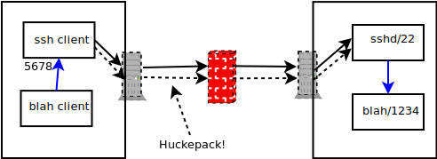

SSH: Port Forwarding¶
Port Forwarding - The Problem (1)¶
Remote port is unreachable (behind a firewall)
Remote computer has a service running
That service listens on port 1234
The service’s protocol is not encrypted
⟶ remote admin denies access through the firewall. Right he is!
I have SSH access to the remote computer because I am trusted.
Port Forwarding - The Problem (2)¶
Port Forwarding - The Solution (1)¶
Hmmm …
I am trusted ⟶ I have access to the remote computer via port 22/
ssh⟶ I can login to the remote computer
⟶ I can do there whateer I am permitted to
⟶ I can login to the remote computer and connect to port 1234
Hmmm …
Then it cannot be a security risk if I automate the entire process
Port Forwarding - The Solution (2)¶
Port Forwarding - The Commandline¶
Creating the tunnel during login
$ ssh -L 5678:127.0.0.1:1234 jfasch@home.com
Rather than connect to remote computer on port 1234 (remember: not possible because of firewall), the client connects to port 5678 locally
As a reaction, SSH server (“daemon”, sitting on the remote computer) connects to port 1234 on remote machine
Client (local/5678) and service (remote/1234) are “virtually” connected